Corsair Project Full Desktop
Corsair / Dec. 2023
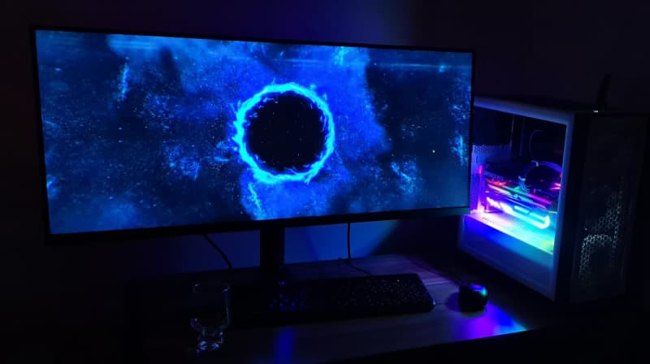
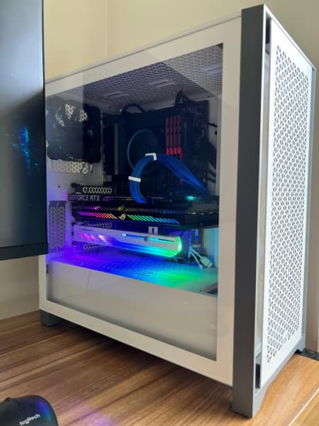
Project Gigabyte Full Desktop
Gigabyte / Dec. 2023
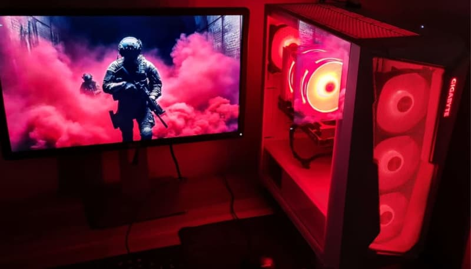
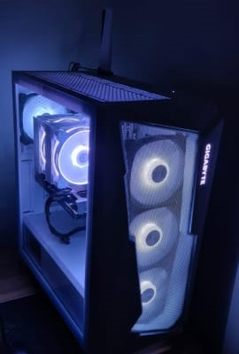
Project Antec - Cyber edition - side panel
Antec / May 2024
 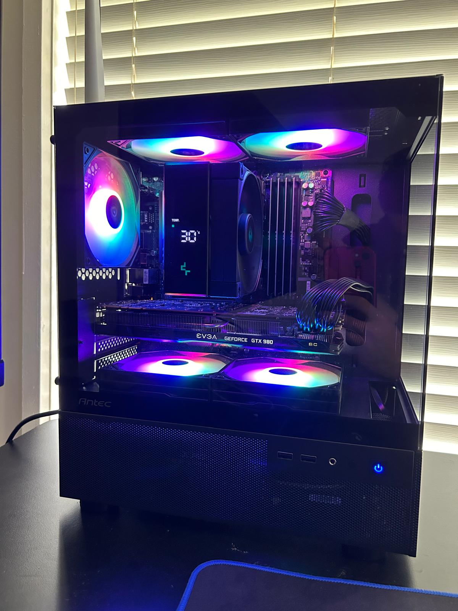
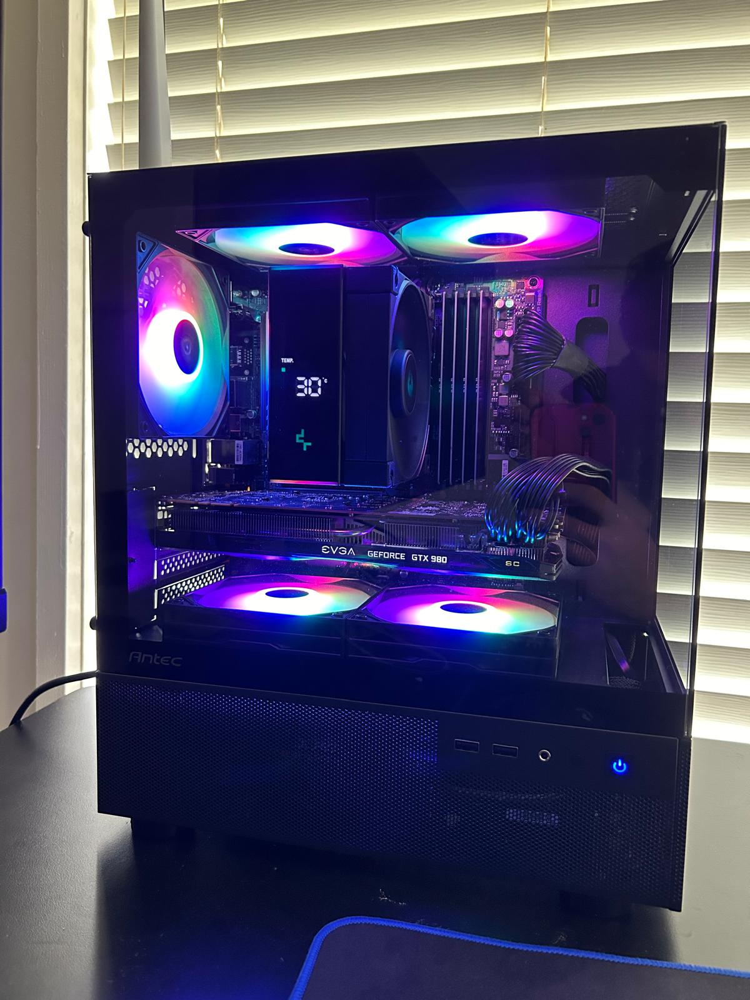

Project MSI - front panel
MSI / Apr. 2019


Project MSI 2 - front panel - i5-11500/32Gb DDR4/B560/RTX3050/700W
MSI / May 2020
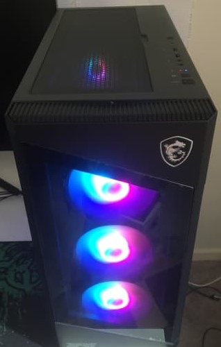
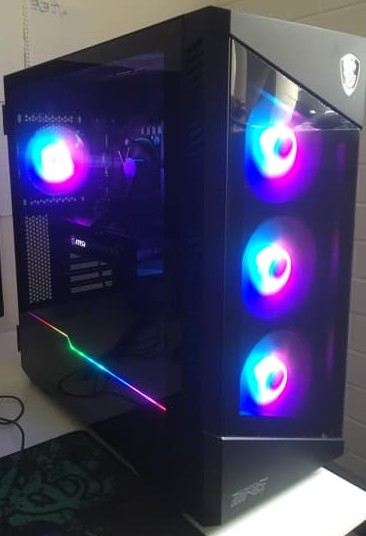
Improved version of Thermaltake's Citadel Turquoise v2-mini-itx
Thermaltake / June 2022

 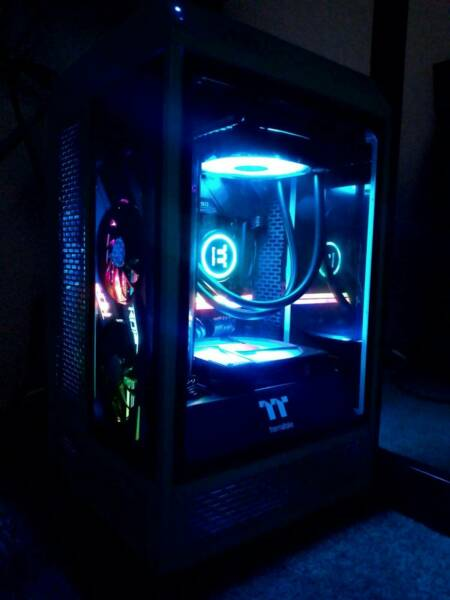
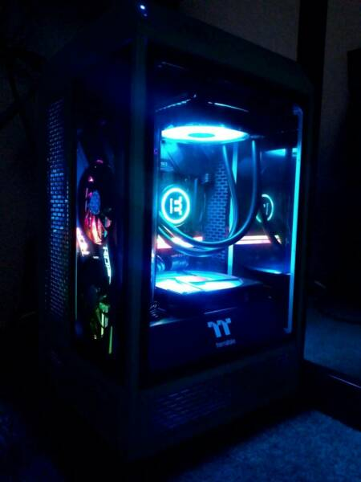
Project Silverstone mini ITX - high-performance in a tiny case
Silverstone / Apr. 2020
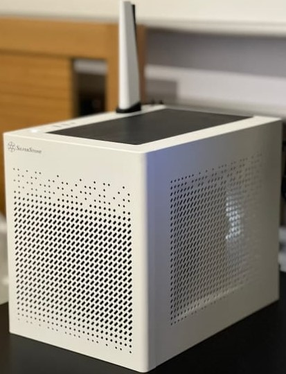
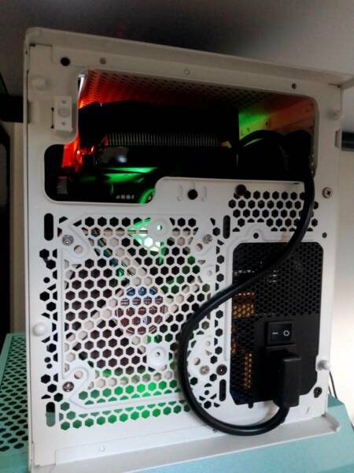
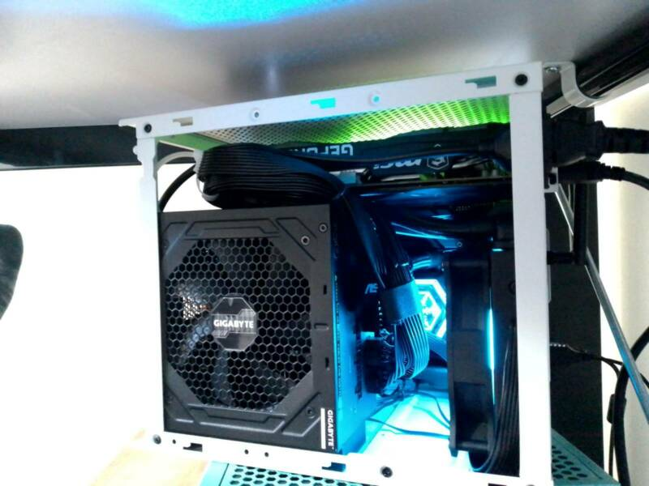
Project Silverstone micro ATX - i5 11400f paired with B560 - triple fan loop design
Silverstone / Mar. 2022